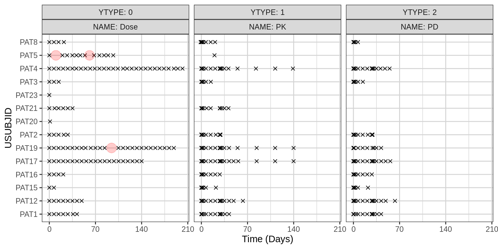

Data Checking
Andy Stein, Siyan Xu
01 March, 2022
Overview
Example of plots and tables to create for data checking.
For a dataset that is much larger that the example one used here, the default figure size may be too small for all plots to be readable. In that case, add or edit the fig.height and fig.width in the top of each chunk. For example: {r, fig.height = 6, fig.width = 8}
Data specifications can be accessed on Datasets and Rmarkdown template to generate this page can be found on Rmarkdown-Template. You may also download the Multiple Ascending Dose PK/PD dataset for your reference (download dataset).
Setup
library(tidyverse)## Warning in (function (kind = NULL, normal.kind = NULL, sample.kind = NULL) : non-uniform 'Rounding' sampler usedlibrary(DT)
library(xgxr)
#set chunk default options
xgx_theme_set()
knitr::opts_chunk$set(warning = FALSE, message = FALSE, fig.height = 4, fig.width = 4)
options(DT.options = list(pageLength = 20)) #pageLength = number of entries per page
#specify the time units and your covariates
covariates = c("WEIGHT0","AGE0","SEX","WEIGHT0_CAT")
time_units_dataset = "days"Load Data
filename = "../Data/Data_Checking.csv"
data_in = read.csv(filename, stringsAsFactors = FALSE)
data = data_in %>%
# in this mutate command are all columns that are required for this check
# if your dataset has different naming convention,
# then rename the right hand side of the equality
mutate(USUBJID = paste0("PAT",USUBJID), # Unique subject identifier
TIME = TIME, # Actual Time
NOMTIME = NOMTIME, # Nominal Time
AMT = AMT, # Dose Amount
LIDV = LIDV, # Dependent variable
YTYPE = YTYPE, # Number for type of dependent variable
NAME = NAME, # Name for the type of dependent variable (e.g. PK)
MDV = MDV, # Missing Dependent Varibale (0 = no, 1 = yes)
CENS = CENS, # Censored Data (0 = no, 1 = yes)
EVID = EVID, # Event ID. 0 = Dependent Variabale, 1 = dose
TRT = TRT, # Treatment Arm character description
TRTN = TRTN) %>%# Treatment Arm numeric description (used for sorting)
arrange(TRTN) %>%
mutate(TRT_low2high = factor(TRT, levels = unique(TRT)),
TRT_high2low = factor(TRT, levels = rev(unique(TRT)))) %>%
mutate(WEIGHT0_CAT = case_when(WEIGHT0 < 60 ~ "WT<60", #creating 2nd categorical var
WEIGHT0 > 80 ~ "WT>80",
TRUE ~ "WT:60-80"))
empty_row = data[1,] %>%
mutate(ID = 23,
USUBJID = paste0("PAT",ID),
LIDV = 0,
YTYPE = 0,
ADM = 1,
CMT = 0,
NAME = "Dose",
EVENTU = "mg",
UNIT = "mg",
MDV = 1,
CENS = 0,
EVID = 1)
data = bind_rows(data, empty_row)
data1 = data %>%
filter(!duplicated(USUBJID))Number of Patients per Treatment Arm
Check to see the number of patients in the dataset is what you expect.
total_patients = data %>%
filter(!duplicated(USUBJID)) %>%
tally() %>%
rename(n_patients = n) %>%
mutate(TRT_low2high = "TOTAL NUMBER")
summary_by_trt = data %>%
filter(!duplicated(USUBJID)) %>%
group_by(TRT_low2high) %>%
tally() %>%
rename(n_patients = n) %>%
bind_rows(total_patients)
datatable(summary_by_trt)Number of Data Points per Treatment Arm and YTYPE
This is another quick way to see if there is way more or way less data than you expected.
summary_by_trt_ytype = data %>%
group_by(YTYPE, NAME, TRT_low2high) %>%
tally() %>%
rename(n_data_points = n) %>%
mutate(YTYPE_NAME = paste0(YTYPE, ":", NAME)) %>%
ungroup() %>%
select(-YTYPE, -NAME) %>%
spread(YTYPE_NAME, n_data_points)
datatable(summary_by_trt_ytype)Dosing Summary
Summary of the dosing information. It can be useful to know if there are patients in the database that never received a dose of the drug. Also, usually AMT usually should not equal 0, and so
dose = data %>%
filter(EVID == 1)
dose_summ = data %>%
group_by(USUBJID) %>%
summarize(total_dose = sum(AMT))
dose_summary = data.frame(
patients_that_never_received_drug = sum(dose_summ$total_dose == 0),
entries_where_AMT_equals_0 = sum(dose$AMT == 0),
entries_where_AMT_greater_than_0 = sum(dose$AMT > 0)) %>%
t() %>%
as.data.frame() %>%
rename(N = V1)
datatable(dose_summary)Dependent Variable (DV) Summary
# compute number of DV by YTYPE and by patient
# with this method, NAs also mean 0
# here we do not remove EVID == 0 records,
# so that patients with a dose but no DV values will be included in the count
dv_number_by_patient = data %>%
group_by(YTYPE, USUBJID) %>%
summarize(n_obs = sum(MDV == 0 & !is.na(LIDV))) %>%
ungroup() %>%
spread(YTYPE, n_obs)
# count total number of patients missing any DV of each type
dv_number_summary = dv_number_by_patient %>%
select(-USUBJID) %>%
summarize_all(c(Nnone = function(x) sum(x == 0 | is.na(x)),
Nmin = function(x) min(x, na.rm = TRUE),
Nmedian = function(x) round(median(x, na.rm = TRUE)),
Nmax = function(x) max(x, na.rm = TRUE))) %>%
t() %>%
as.data.frame() %>%
rename(N = V1)
dv_number_summary$YTYPE_SUMM = row.names(dv_number_summary)
dv_number_summary = dv_number_summary %>%
mutate(YTYPE = as.numeric(str_extract(YTYPE_SUMM, "^\\d+")),
SUMM = str_extract(YTYPE_SUMM, "[A-Za-z]+$")) %>%
select(-YTYPE_SUMM) %>%
spread(SUMM, N)
# create an overall summary table
dv_summary_overall = data %>%
filter(EVID == 0) %>%
group_by(YTYPE, NAME) %>%
summarize(n_total = n(),
n_missing_or_NA = sum(is.na(LIDV) | MDV == 1),
n_zeroes = sum(LIDV == 0),
n_censored = sum(CENS == 1),
n_negative = sum(LIDV < 0),
n_duplicate_times = sum(duplicated(paste(USUBJID,TIME))),
min = min (LIDV, na.rm = TRUE),
Q1 = quantile(LIDV, 0.25, na.rm = TRUE),
median = median (LIDV, na.rm = TRUE),
Q3 = quantile(LIDV, 0.75, na.rm = TRUE),
max = max (LIDV, na.rm = TRUE)) %>%
left_join(dv_number_summary, by = "YTYPE") %>%
mutate(YTYPE_NAME = paste0(YTYPE,":",NAME)) %>%
ungroup() %>%
select(-YTYPE, -NAME) %>%
t() %>%
as.data.frame()
names(dv_summary_overall) = as.matrix(dv_summary_overall["YTYPE_NAME",])
dv_summary_overall$Value = row.names(dv_summary_overall)
row.names(dv_summary_overall) = c()
dv_summary_overall = dv_summary_overall %>%
filter(Value != "YTYPE_NAME") %>%
mutate(Type = case_when(str_detect(Value, "^n_") ~ "Number of data points",
str_detect(Value, "^N") ~ "Number of data points per patient",
TRUE ~ "Value of data points")) %>%
mutate(Value = str_replace(Value, "^n_", ""),
Value = str_replace(Value, "^N", "")) %>%
select(Type, Value, everything()) %>%
arrange(Type)
datatable(dv_summary_overall)Covariate Summary
Provide overview of the covariates. Check to see in particular that the distributions (along the diagonals) make sense.
num_unique_vals = data1[,covariates] %>%
summarise_all(function(x){length(unique(x))}) %>%
as.numeric()
cts_cov = data1[,covariates[num_unique_vals >= 8]]
cat_cov = data1[,covariates[num_unique_vals < 8]]
cts_cov_summary = cts_cov %>%
gather() %>%
group_by(key) %>%
summarise(n_missing_or_NA = sum(is.na(value)),
min = min (value, na.rm = TRUE),
Q1 = quantile(value, 0.25, na.rm = TRUE),
median = median (value, na.rm = TRUE),
Q3 = quantile(value, 0.75, na.rm = TRUE),
max = max (value, na.rm = TRUE))
datatable(cts_cov_summary)cat_summary = function(x) {
unique_x = sort(unique(x))
str = 1:length(unique_x)
for(i in 1:length(unique_x))
{
str[i] = paste0(unique_x[i], "=", sum(x == unique_x[i]))
}
output = paste(str, collapse = ", ")
}
cat_cov_summary = cat_cov %>%
gather() %>%
group_by(key) %>%
summarise(n_missing_or_NA = sum(is.na(value)),
n_distinct = n_distinct(value),
count_summary = cat_summary(value))
datatable(cat_cov_summary)GGally::ggpairs(data1,
columns = covariates,
diag = list(continuous = "barDiag"))
Columns that contains NAs (and the number they contain)
Often, a dataset is not supposed to contain any NAs. This section highlights where the NAs occur. If the table below is empty, then there are no NAs in the dataset.
na_summary = data %>%
dplyr::summarise_all(function(x) {sum(is.na(x))}) %>%
t() %>%
as.data.frame() %>%
rename(N_NA = V1)
na_summary$Column = names(data)
na_summary = na_summary %>%
select(Column, N_NA) %>%
filter(N_NA > 0)
datatable(na_summary)Dose and PK/PD Data Collection Times
Get an overview of the timing of the dose, PK, and PD data collection for all patients and make sure it’s in line with expectations. Each “x” denotes a record, i.e. a dose time or a PK or PD assessment time. Each red circle denotes what may be a dose interruption, when the time between doses is greater than DT_flag and NAME == "Dose"
You might need to adjust the figure height and width in the line below, depending on how many different YTYPEs and how many patients your dataset has.
DT_flag = 10 # >10 days between doses is flagged
NAME_DOSE = "Dose" # NAME == NAME_DOSE is flagged
data_dose_interruption = data %>%
group_by(USUBJID, NAME) %>%
mutate(DT = lead(TIME, default = max(TIME)) - TIME,
TMID = TIME + DT/2) %>%
ungroup() %>%
filter(DT > DT_flag, NAME == NAME_DOSE)
g = ggplot(data, aes(x = TIME, y = USUBJID))
g = g + geom_point(shape = 4)
g = g + geom_point(data = data_dose_interruption,
aes(x = TMID, y = USUBJID),
color = "red", alpha = 0.2, size = 5)
g = g + xgx_scale_x_time_units(units_dataset = time_units_dataset)
g = g + facet_wrap(~YTYPE+NAME, labeller = label_both)
print(g)
Nominal vs Actual Time Discrepancies + Nominal Time Summary
A common error is that either the nominal or actual time were derived incorrectly. Thus a quick sanity check is to plot nominal vs actual time. Any points that don’t lie near the identity line require further investigation.
xymin = min(c(data$NOMTIME, data$TIME), na.rm = TRUE)
xymax = max(c(data$NOMTIME, data$TIME), na.rm = TRUE)
g = ggplot(data = data, aes(x = TIME, y = NOMTIME))
g = g + geom_point()
g = g + annotate("segment", x = xymin, xend = xymax, y = xymin, yend = xymax, color = "blue")
g = g + xlim(c(xymin, xymax))
g = g + ylim(c(xymin, xymax))
print(g)
Unique Nominal Time values
Look at the nominal times in the dataset, just to make sure they’re correct. In this case, there is a mistake because nominal time has units of days and the 5m, 1h, 2h, 4h, and 8h nominal time values were all set to “1” rather than having unique values (i.e. 1 hour should be 1/24 = 0.041 rather than 1).
cat(sort(unique(data$NOMTIME)))## 1 2 4 8 15 22 29 30 32 36 43 50 57 64 71 78 85 92 99 106 113 120 127 134 141 148 155 162 169 176 183 190 197 204 568List of things to do and to consider
Features/plots/tables to add
- Create and display a summary of the data points with potential issues to help the user more quickly resolve them.
- Better understand Matt Fidler’s dose and observation plots that use
IIandADDL. Andy still doesn’t really get it. It might be more for “Gen Med” than for Oncology.
Make some clunky things a bit nicer
- See if there’s a nicer, cleaner way to transpose a data.table and get the column names right.
- See if there’s a better option for doing the categorical covariate summary other than defining the
cat_summaryfunction.
xGx website
- Rename the “Data checking” header to “Data”
- Update the core and extended team
R session info
sessionInfo()## R version 4.1.0 (2021-05-18)
## Platform: x86_64-pc-linux-gnu (64-bit)
## Running under: Red Hat Enterprise Linux
##
## Matrix products: default
## BLAS/LAPACK: /CHBS/apps/EB/software/imkl/2019.1.144-gompi-2019a/compilers_and_libraries_2019.1.144/linux/mkl/lib/intel64_lin/libmkl_gf_lp64.so
##
## Random number generation:
## RNG: Mersenne-Twister
## Normal: Inversion
## Sample: Rounding
##
## locale:
## [1] LC_CTYPE=en_US.UTF-8 LC_NUMERIC=C LC_TIME=en_US.UTF-8 LC_COLLATE=en_US.UTF-8
## [5] LC_MONETARY=en_US.UTF-8 LC_MESSAGES=en_US.UTF-8 LC_PAPER=en_US.UTF-8 LC_NAME=C
## [9] LC_ADDRESS=C LC_TELEPHONE=C LC_MEASUREMENT=en_US.UTF-8 LC_IDENTIFICATION=C
##
## attached base packages:
## [1] stats graphics grDevices utils datasets methods base
##
## other attached packages:
## [1] DT_0.18 forcats_0.5.1 stringr_1.4.0 purrr_0.3.4 readr_2.0.1 tibble_3.1.3 tidyverse_1.3.1
## [8] zoo_1.8-9 xgxr_1.1.1 gridExtra_2.3 tidyr_1.1.3 dplyr_1.0.7 ggplot2_3.3.5
##
## loaded via a namespace (and not attached):
## [1] colorspace_2.0-2 ellipsis_0.3.2 class_7.3-19 rsconnect_0.8.24 htmlTable_2.2.1
## [6] base64enc_0.1-3 fs_1.5.0 gld_2.6.2 rstudioapi_0.13 proxy_0.4-26
## [11] farver_2.1.0 Deriv_4.1.3 fansi_0.5.0 mvtnorm_1.1-2 lubridate_1.7.10
## [16] xml2_1.3.2 codetools_0.2-18 splines_4.1.0 rootSolve_1.8.2.2 knitr_1.33
## [21] Formula_1.2-4 jsonlite_1.7.2 broom_0.7.9 binom_1.1-1 cluster_2.1.2
## [26] dbplyr_2.1.1 png_0.1-7 compiler_4.1.0 httr_1.4.2 backports_1.2.1
## [31] assertthat_0.2.1 Matrix_1.3-3 cli_3.0.1 prettyunits_1.1.1 htmltools_0.5.1.1
## [36] tools_4.1.0 gtable_0.3.0 glue_1.4.2 lmom_2.8 Rcpp_1.0.7
## [41] cellranger_1.1.0 jquerylib_0.1.4 vctrs_0.3.8 nlme_3.1-152 crosstalk_1.1.1
## [46] xfun_0.25 rvest_1.0.1 lifecycle_1.0.0 MASS_7.3-54 scales_1.1.1
## [51] hms_1.1.0 expm_0.999-6 RColorBrewer_1.1-2 yaml_2.2.1 Exact_2.1
## [56] pander_0.6.4 sass_0.4.0 rpart_4.1-15 reshape_0.8.8 latticeExtra_0.6-29
## [61] stringi_1.7.3 highr_0.9 e1071_1.7-8 checkmate_2.0.0 boot_1.3-28
## [66] rlang_0.4.11 pkgconfig_2.0.3 bitops_1.0-7 evaluate_0.14 lattice_0.20-44
## [71] htmlwidgets_1.5.3 labeling_0.4.2 tidyselect_1.1.1 GGally_2.1.2 plyr_1.8.6
## [76] magrittr_2.0.1 R6_2.5.1 DescTools_0.99.42 generics_0.1.0 Hmisc_4.5-0
## [81] DBI_1.1.1 pillar_1.6.2 haven_2.4.3 foreign_0.8-81 withr_2.4.2
## [86] mgcv_1.8-35 survival_3.2-11 RCurl_1.98-1.4 nnet_7.3-16 modelr_0.1.8
## [91] crayon_1.4.1 utf8_1.2.2 tzdb_0.1.2 rmarkdown_2.11 jpeg_0.1-9
## [96] progress_1.2.2 grid_4.1.0 readxl_1.3.1 minpack.lm_1.2-1 data.table_1.14.0
## [101] reprex_2.0.1 digest_0.6.27 munsell_0.5.0 bslib_0.2.5.1